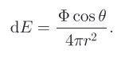
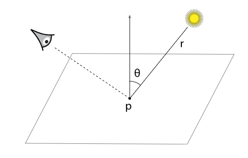

PBRT CHAPTER_1
*Introduction
PBRT(Physically Based Rendering Toolkit)
基于物理渲染
渲染是根据三维场景的描述生成图像的过程。显然，这是一个非常广泛的任务，有许多方法可以实现它。基于物理的技术试图模拟现实;也就是说，他们使用物理原理来模拟光和物质的相互作用。虽然基于物理的方法似乎是处理呈现的最明显的方法，但它只是在过去10年左右的实践中才被广泛采用。
学习基于PBRT-v3
友情链接：
（一）PBRT-v3在线电子书：http://www.pbr-book.org/3ed-2018/contents.html
（二）实验室学长的PBRT-v3配置教程: https://fancyvin.github.io/2019/07/13/how-to-compile-pbrt-v3-renderer/
1.1 Literate Programming 文学编程
PBRT-v2和-v3之间的改动
- 增加了一个功能完备的BRDF模型，支持体积光照与重要性多重路径采样。
- 次表面散射，基于光线追踪技术，无需预处理。
- 解决浮点数四折五入的问题
- 光子映射
- 样本生成
1.2 Photorealistic Rendering and the Ray-Tracing Algorithm 照片级渲染及光线跟踪算法
- 渲染分块问题：
渲染任务过多的分块会影响性能。
过小分块也是不科学的，因为处理核心问题有一定的开销。
场景的复杂性会对不同CPU核心的渲染速度产生影响。所以如果是分块数等于核心数，渲染完的核心会等待没渲染完的核心。
PBRT采用的是16*16的方案
浮点类型
pbrt采用了FLOAT，这样浮点格式会根据宏进行调整
1.2.1 Camera相机
- 针孔相机
胶片Film 针孔Pinhole 视见体Viewing Volume1.2.2 Ray-Object Intersection光线-对象相交
- 当相机生成一条光线时，renderer的首要任务是：确定与光线intersect的首个对象和相交的位置。This intersection point is the visible point along the ray, and we will want to simulate the intersection of light with the object at this point.
{kind=link}
[image]
给定光线r,o为光线源点，d表示方向向量，参数t的范围为0到无穷，通过t取不同的值可以得到光线上的任何一点。
在交点的计算中，需测试光线与全部场景对象之间的相交结果，并选取与光线首次相交的对象。
多数场景均由多个对象构成，蛮力进行相机计算将依次测试场景中的各个对象，并选取相交结果最小的t值，但这种方案的计算速度较为缓慢；还可以引入加速结构，并剔除一组对象，进行算法的加速。
1.2.3 Light Distribution光照分布
{kind=link}
[image]
- 较大球体上某点处的能量将小于较小球体，其原因在于相同的光能分布于较大的面积上，特别的，对于半径为r的球体，其表面某点处的能量与1/r^2成比例。
- 由于点光源采用各向均等方式辐射能量。因而两球体存储相同光能。
- 对于球体表面面积微分dA,其上的光能能够表示为：
 [image]
其中Φ表示光源能量，θ为表面点法线与表面点和光源连线的夹角 [image]
{kind=link}
{kind=link}
1.2.4Visibility 可见性
- 确定是否被遮挡（阴影）
- 当着色点与光源之间没有遮挡时，着色点方可被“点亮”
确定是否被遮挡： - 1、着色点与光源之间的连线，指向光源——阴影光线（shaow rays）
- 2、通过交点计算，算出参数t,确定阴影光线的交点，并通过t的值，确定遮挡关系
1.2.5表面散射 Surface Scattering
场景中的各对象的材质属性，描述了表面各点处的外观属性，材质通过BRDF定义（双向反射分布函数），而材质决定外观（BSDF决定通用散射行为）
{kind=link}
[image]
参数含义：
{kind=link}
[image]
1.2.6 Indirect Light Transport
{kind=link}
[image]
1.2.7 Ray Propagation 射线传播
渲染环境不一定是真空（vacuum）
参与介质介质影响光线传播
影响的两种方式：
（一）介质在不同的方向上吸收或散射，衰减光线
（二）如：介质自发光或者价值沿当前光线相反方向并向其他方向散射光线
1.3 pbrt:System Overview 系统总览
标准的面向对象构建
抽象类针对重要实体进行定义
The majority of the system is implemented purely in terms of the interface provided by these abstract base class.(系统的主要内容根据抽象类提供的接口实现)
{kind=link}
[pbrt-v3中的10个抽象类]
pbrt网站中有源码以及额外实现的图形、材质等内容的源码
1.3.1 Phase of Execution执行阶段
PBRT程序执行：
① 解析用户提供的.pbrt文件（场景描述文件）
初始化相应的类→Scene类的实例和Integrator类（此类用于实现算法渲染Scene）的实例
② 整个渲染流程
{kind=link}
[pbrt-v3中的10个抽象类]
- 并行相关问题
① 读取场景文件以及创建场景都是单线程的，获取场景信息因为不涉及到修改数据，所以可以无视。我们只需要关注修改内存数据的情况。
② 请不要在不同步的情况下修改数据
③ 对应初始化可以考虑std::call_once函数
④ 实用程序类MemoryArena（用于高性能临时内存分配）和RNG（伪随机数生成）也不适合多线程使用; 这些类存储在调用其方法时被修改的状态，并且相互排除的保护修改到其状态的开销相对于它们执行的计算量而言过多。 因此，在上面的SamplerIntegrator :: Render()方法的代码中，实现在堆栈上分配这些类的perthread实例。
⑤ 每个线程需要各复制一个Sampler的实例，以保证线程安全
⑥ 目前的计算机架构运算除法、平方根和三角函数是最慢的。加法与乘法相比之下要快10~50倍。所以我们可以减少这种数学运算数量来提高性能。例如我们可以提前计算1/v,之后再乘。而不是重复除以v。
1.3.2 Scene Representation 场景表达
PBRT中的main函数→处理argv中提供的命令行参数
→ 初始化Option Structure,传给pbrtInit()进行系统内的初始化
→ parse（解析）Scene ,创建 Scene、Integrator对象
after rendering→pbrtClaenup()，在系统退出前进行清理ParseFile() 解析Scene
Light对象：场景中的光源，指定光的形状和能量分布
场景使用C++标准库（std）的shared_ptr实例向量，存储所有灯光
pbrt使用共享指针跟踪对象被其他实例引用的次数（当最后一个持有实例的引用被销毁时，引用次数为零）
系统中很多部分需要访问光源，因此Scene使其成为公共变量。场景定义后，渲染开始前，进行预处理 Preprocess()
Scene提供两个光线图元求交函数：
①bool Intersect(const Ray&ray,SurfaceInteraction *insect)const
对指定光线进行求交判定，将沿光线与图元相交最近的交点信息保存到SurfaceIntersection结构中
②bool IntersectP(const Ray&ray)const
仅确定沿光线是否存在交点
1.3.3 Integrator Interface and SamplerIntegrator
渲染场景是由实现了Integrator接口的实例完成的，这其中Integrator是一个抽象基类，提供Render()方法
virtual void Render(const Scene &scene)=0;
Integrator接口定义在：core/integrator.h中
Integrator实用方法定义在：core/integrator.cpp中
各类积分器的实现位于Integrator文件目录中Integrator
↓继承
SamplerIntegrator (Create in RenderOptions::MakeIntegrator)
↓实现
WhittedIntegrator
在SamplerIntegrator中，存储了指向Sampler的指针
- Camera对象：控制相机相关，postion,orientation,filed of view ,focus等
- Film对象：在Camera对象内，控制图像存储
1.3.4 The Main Rendering Loop
- 当Scene、Integrator被指定后，Invoke(调用)Render()开启main rendering loop
实现：at each of a series of positions on the image plane, the method uses the Camera and the Sampler to generate a ray into the scene and then uses the Li() method to determine the amount of light arriving at the image plane along that ray. This value is passed to the Film, which records the light’s contribution.
主循环源代码：
1 | void SamplerIntegrator::Render(const Scene &scene) { |